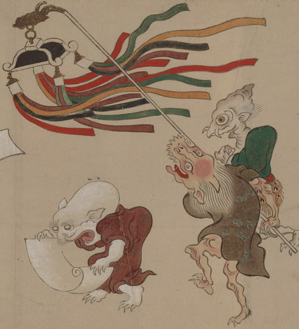

竜頭の天蓋をかかげる化物。茶色の衣をまとっており、頭髪は白く長い。獣を思わせる顔つきをしており、大きく口を開いて、何本もの鋭い牙を覗かせている。前を歩く巻物を読む化物に対して、天蓋をかかげているように見える。
出典：親書誌：U426_nichibunken_0154：妖怪絵巻；ヨウカイエマキ／日付：2010／資源識別子：U426_nichibunken_0154_0055_0000
Copyright (c)2010- International Research Center for Japanese Studies, Kyoto, Japan. All rights reserved.